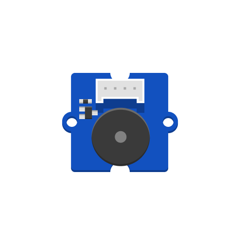
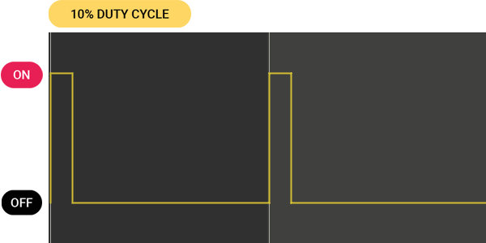

Can generate beeping sounds and melodies.
Technical information on this component is available here.
A Piezo Buzzer is an electronic component commonly used to generate audible signals or alarms in electronic circuits. The buzzer included in the kit is an active buzzer. That means a simple digital signal can turn the buzzer on and off, like a digital component. When powered on that way, the buzzer uses an internal oscillator to produce a sound at a fixed frequency. Alternatively, the buzzer can be driven using a PWM signal to create different tones or melodies for more advanced use cases.
The code example below treats the buzzer like a digital component connected to pin D4, turning it on and off. It acts as a simple acoustic alarm at the fixed frequency set by the buzzer’s internal oscillator.
# --- Imports
import board
import time
import digitalio
# --- Variables
piezo_buzzer = digitalio.DigitalInOut(board.D4)
piezo_buzzer.direction = digitalio.Direction.OUTPUT
# --- Functions
# --- Setup
# --- Main loop
while True:
piezo_buzzer.value = True
time.sleep(0.5)
piezo_buzzer.value = False
time.sleep(0.5)
The previous example turned the buzzer either fully on or off to produce rather annoying sounds. Here, we use a method called pulse-width modulation (PWM) to manage the frequency and duration of the signal driving the buzzer, letting us control the pitch of the sound.
To produce PWM signals, we use the pwmio module. It provides the pwmio.PWMOut() method, allowing us to specify the pin to use and that we want to vary the frequency of our PWM signal.
Pins that support PWM are denoted by a ~ beside their names on the BitsyExpander board.
Next, we choose the frequency of our signal, indicating how many times it repeats itself in one second. A value of 262 Hz (or 262 repetitions per second) will cause the piezoelectric element of the buzzer to vibrate at that rate, producing the musical note C4 (middle C).
In the main loop, we generate our tone by setting the PWM signal’s duty cycle using piezo_buzzer.duty_cycle. The expression 10 * 65535 // 100 creates a 10% duty cycle, providing good volume and minimal distortion. (Higher values slightly increase the volume but cause distortions due to the buzzer’s internal oscillator.) To silence the buzzer, we set the duty cycle to 0%.
A PWM signal’s duty cycle represents the time the signal is “on” during each repetition. Therefore, a duty cycle of 10% means the signal is on 10% and off 90% of the time.

# --- Imports
import time
import board
import pwmio
# --- Variables
piezo_buzzer = pwmio.PWMOut(board.D4, variable_frequency=True)
piezo_buzzer.frequency = 262
duty_cycle_val = 10 * 65535 // 100
# --- Functions
# --- Setup
# --- Main loop
while True:
piezo_buzzer.duty_cycle = duty_cycle_val
time.sleep(0.5)
piezo_buzzer.duty_cycle = 0
time.sleep(0.5)
Building on the previous example, let’s explore how to create and play back a melody. Instead of defining one fixed tone value, we program a function to play individual tones with a specified frequency, duration, and ensuing pause. We define a melody using an array, where each entry represents a note and its characteristics. In the main loop, we iterate through the melody array, playing each note using the play_tone function we have written.
# --- Imports
import time
import board
import pwmio
# --- Variables
piezo_buzzer = pwmio.PWMOut(board.D4, variable_frequency=True)
duty_cycle_val = 10 * 65535 // 100 # A 10% Duty Cycle produces cleaner sounding tones on an active buzzer
# --- Functions
def play_tone(freq, duration, pause):
piezo_buzzer.frequency = freq
piezo_buzzer.duty_cycle = duty_cycle_val
time.sleep(duration) # Duration of note
piezo_buzzer.duty_cycle = 0 # Off
time.sleep(pause) # Pause after note
# --- Setup
melody_ducklings = [
[262, 0.25, 0], [294, 0.25, 0], [330, 0.25, 0], [349, 0.25, 0], [392, 0.45, 0.05], [392, 0.45, 0.05],
[440, 0.25, 0], [440, 0.25, 0], [440, 0.25, 0], [440, 0.25, 0], [392, 0.75, 0.25],
[440, 0.25, 0], [440, 0.25, 0], [440, 0.25, 0], [440, 0.25, 0], [392, 0.75, 0.25],
[349, 0.25, 0], [349, 0.25, 0], [349, 0.25, 0], [349, 0.25, 0], [330, 0.45, 0.05], [330, 0.45, 0.05],
[294, 0.25, 0], [294, 0.25, 0], [294, 0.25, 0], [294, 0.25, 0], [262, 0.75, 0.25]
]
# --- Main loop
while True:
for note in melody_ducklings:
play_tone(note[0], note[1], note[2])
time.sleep(0.75)
The example code above plays back a German nursery rhyme. You can replace the melody array with one of the following ones, representing a French nursery rhyme and a Dutch one, respectively:
melody_jaques = [
[262, 0.5, 0], [294, 0.5, 0], [330, 0.5, 0], [262, 0.25, 0.25],
[262, 0.5, 0], [294, 0.5, 0], [330, 0.5, 0], [262, 0.25, 0.25],
[330, 0.5, 0], [349, 0.5, 0], [392, 0.75, 0.25],
[330, 0.5, 0], [349, 0.5, 0], [392, 0.75, 0.25],
[392, 0.25, 0], [440, 0.25, 0], [392, 0.25, 0], [349, 0.25, 0], [330, 0.5, 0], [262, 0.25, 0.25],
[392, 0.25, 0], [440, 0.25, 0], [392, 0.25, 0], [349, 0.25, 0], [330, 0.5, 0], [262, 0.25, 0.25],
[262, 0.5, 0],[196, 0.5, 0],[262, 0.75, 0.25],
[262, 0.5, 0],[196, 0.5, 0],[262, 0.75, 0.25]
]
melody_rijsttafel = [
[349, 0.75, 0], [392, 0.75, 0], [262, 0.5, 0],
[392, 0.75, 0], [440, 0.75, 0], [523, 0.125, 0], [466, 0.125, 0], [440, 0.25, 0],
[349, 0.75, 0], [392, 0.75, 0], [262, 0.5, 0],
[262, 0.75, 0.5], [262, 0.125, 0], [262, 0.125, 0], [294, 0.125, 0], [349, 0.25, 0], [349, 0.5, 0]
]
For the musicians amongst you
Both these examples are written to resemble a musical meter called “common time.” In this case, the values for duration and pause in each measure (represented as one line in the array formatting) add up to two seconds (where each half second corresponds to a quarter note). You can consult a Music Note To Frequency Chart to help you use this blueprint to encode your own melody or sheet music into an array.